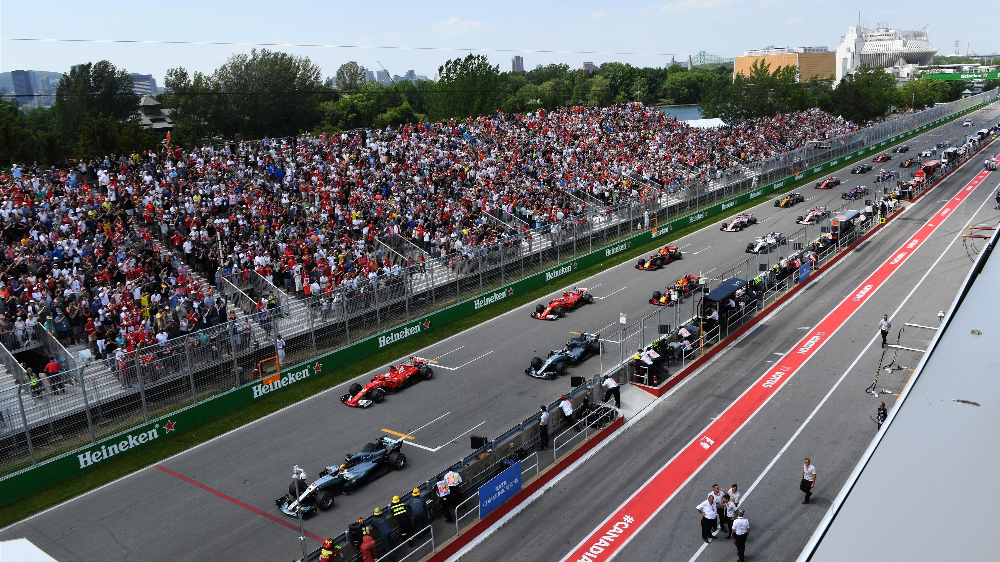
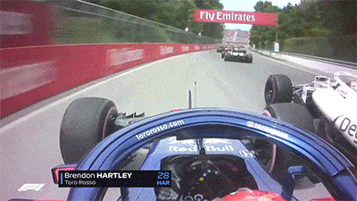
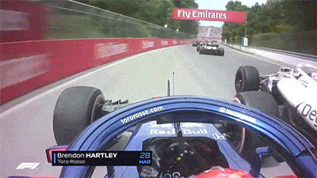

CANADIAN GRAND PRIX
Cicuit Length:
6.003km (3.730 mi)
Turns:
20
Number of Laps:
70
First Grand Prix:
1978
Race Distance:
306.049 km
Canada's race takes place a country in Northern-America. Ottawa is the capital of Canada,
about 994.837 thousend people live in Ottawa. And across Canada live about 37,6 Million inhabitants. So far the record holder
of this circuit is Valteri Bottas. This year (2021) the race will be on June 13. The fastest speed last year (2019) was measured at 213.246 km/h.
The Canadian Grand Prix is often the seventh event of the Formula 1 of the Calendar year.


Winners of the Canada GP
2020 - Canceled due to Corona
2019 - Lewis Hamilton
2018 - Sebastian Vettel
2017 - Lewis Hamilton
2016 - Lewis Hamilton
2015 - Lewis Hamilton
2014 - Daniel Ricciardo
2013 - Sebastian Vettel
2012 - Lewis Hamilton
2011 - James Button
2010 - Lewis Hamilton
2009 - Wasn't Held
2008 - Robert Kubica
2007 - Lewis Hamilton